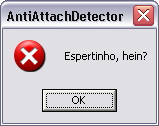
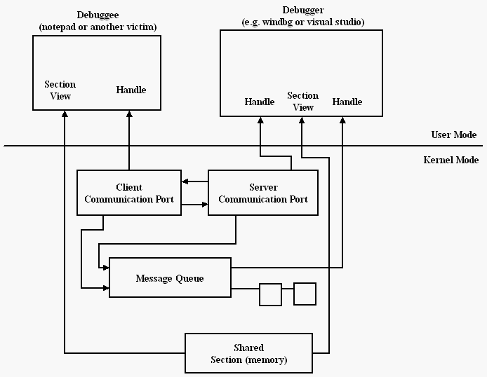
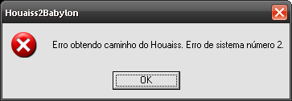
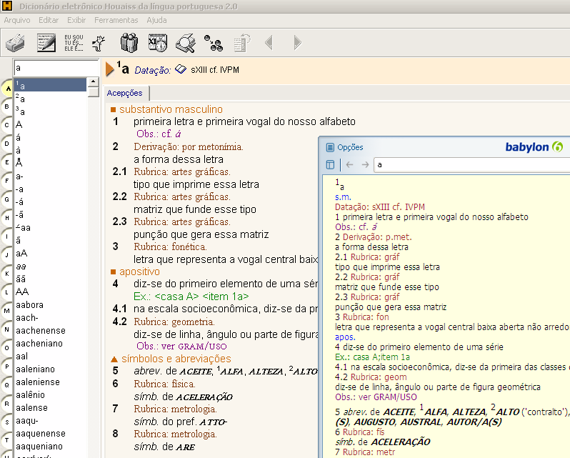
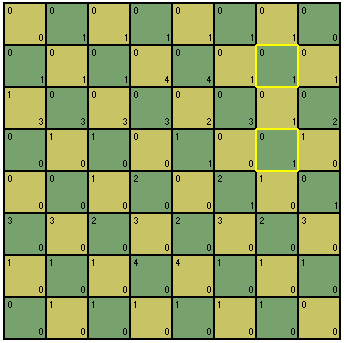
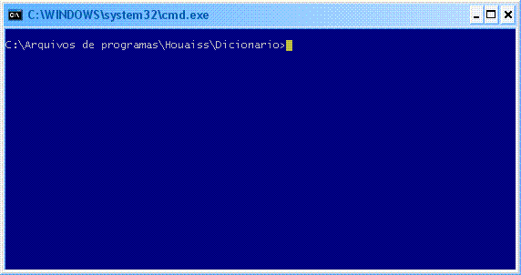
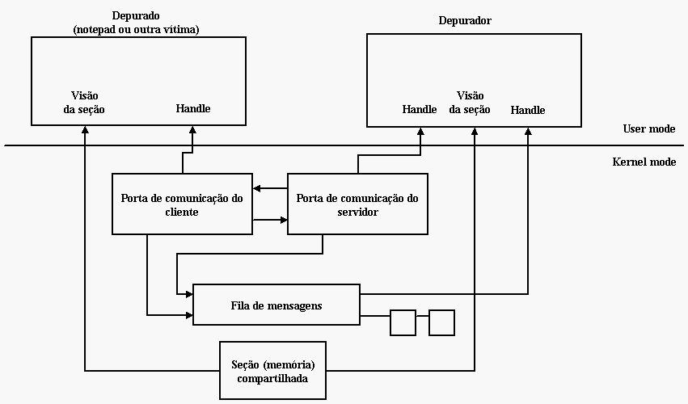
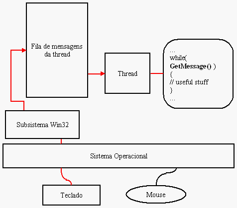

| Listas: a implementação e a morte 2024-09-08 projects Implementei suporte a listas no blogue e comecei a vomitar listas temáticas, como os meus textos de Breaking Bad, House of Cards e outros, apagando o post com a lista dos textos relacionados com estas séries. A ideia era permitir uma indexação diferente de tags, um conjunto menor, que não precisa ser mantido, mas ao mesmo tempo categorizado sob a mesma alcunha. |
| Txt2Blog: Mais formas de link (ajustes e melhorias) 2024-09-01 projects Dei uma reformada no script awk que estava com muitas variáveis globais (agora são poucas e reconhecíveis) e aproveitei para remover os links de busca por outros artigos por links diretos para os artigos. Para conseguir isso eu tive que rodar um script antes no arquivo inteiro dos posts para localizar onde ficarão os posts para depois conseguir linkar na hora de renderizar os mesmos posts. Isso resolve apenas uma questão pendente com os links. Há mais alguns acertos e melhorias do tema que é justamente o motivo de eu ter feito o próprio script de geração de blogs: metadados. |
| Tentei dividir um post em dois, mas... 2024-08-22 projects Existe um bug que considera slugs como globais, independente do capítulo (mês) em que o post foi escrito. Com isso títulos ou slugs iguais geram o mesmo post na listagem de posts e apenas uma entrada no quicksearch. |
| Finalmente blogawk 2023-08-20 projects computer Fiquei muito empolgado com a solução awk que converte meus posts para um epub "carregável" em um leitor de ebook e no computador e parti para usar a mesma estratégia em meu blog para abandonar dessa vez o Hugo, um renderizador de sites estáticos feito em golang extremamente rápido, mas que não está dando conta dos meus mais de 4000 posts. |
| Why I will also build my own shitty static site generator 2023-06-05 blogging projects O texto [Why I Built My Own Shitty Static Site Generator] resume muito bem minhas restrições sobre Static Site Generators em geral e acaba devaneando por caminhos pelos quais eu também passeio quando penso em meus textos e as diversas formas dele se propagar. É um ensaio, quase rascunho, do seu autor, mas já abrange para mim de uma maneira holística o suficiente os dilemas entre usar o que já está pronto e perder a liberdade de colocar as ideias no papel ou preferir se fechar nas soluções caseiras, capengas, mas 100% autorais. Não chega a ser o texto que eu gostaria de ter escrito sobre o assunto e que não precisarei escrever por enquanto, mas é um começo corajoso. Os mesmos desafios estão aí. |
| Como Publicar Seu Blog Em Hugo Para Ebook 2019-07-10 computer projects Eu publico meu blog inteiro de tempos em tempos para um ebook que construo formatando primeiro em html através de um tema do [Hugo], o parser de blog que estou usando no momento porque ele suporta 2500 posts sem reclamar. É uma receita simples de sucesso se você precisar ter todo seu conteúdo indexado para rápida referência ou leitura cronológica. |
| Houaiss Para * 2014-10-25 projects O projeto Houaiss2Babylon, iniciado há mais de 6 anos, já devia estar ultrapassado. Porém, cada vez mais pessoas compartilham seus usos e desusos do que foi um dia uma base de dados ofuscada e presa a apenas uma interface Windows. Agora, além de já ter sido convertido para Kindle, em Python e agora através do nodejs para o MySql! |
| Houaiss para Babylon em Python! 2014-02-27 projects computer O [Fabio Montefuscolo] expandiu mais ainda o acesso do conversor Houaiss para Babylon implementando uma versão em Python, uma linguagem que estou aprendendo a adorar. Tudo é mais simples, rápido e direto em Python, e o código que ele escreveu utiliza todo esse potencial: |
| Houaiss 1.3 2011-04-28 projects Erroneamente imaginando que a falta de acesso tinha alguma coisa a ver com a escrita de arquivos no disco, ou até mesmo com a execução de processos, descobri depurando (o bom e velho depurador) que a origem do acesso negado estava na função AssignProcessToJobObject.aspx). Misteriosamente, no Windows 7, ao chamar essa função ocorre esse erro, independente da execução ser como administrador ou não. |
| Houaiss no Kindle 2011-03-22 blogging projects O blogue de José Ribeiro Pena Neto, aparentemente recém-criado, conseguiu utilizar minha solução de conversão do dicionário Houaiss para Babylon em algo mais incrívei ainda: converter, em alguns passos, a base de dados do Houaiss para o Amazon Kindle. |
| Atualizando HouaissParaBabylon no saite 2010-10-22 projects O último comentário no meu último artigo sobre o conversor Houaiss para Babylon me fez lembrar de algo muito importante: eu não atualizei o branch do saite com a última versão. Deve ser por isso que as pessoas estão tendo problemas com o uso do código. Resolvo isso já: |
| Houaiss Para Babylon! 2010-04-08 projects Os últimos comentários de Henrique Esteves (quando havia seção de comentários no blogue) sobre o HouaissParaBabylon me fizeram dar mais uma fuçada nele e ver se tento deixá-lo compatível com o Houaiss 3. Foram apenas algumas horas e acho que resolvi os probleminhas relacionados com a troca do registro de instalação e o nome dos arquivos que armazenam os verbetes. |
| HouaissParaBabylon versão 1.1 2008-12-30 projects Saindo mais um do forno. Essa nova versão do conversor do dicionário Houaiss para Babylon corrige o problema de não encontrar o Houaiss 1.0. O problema ocorria porque o conversor se baseava na localização do desinstalador para encontrar o dicionário. Na primeira versão do dicionário o desinstalador fica na pasta c:\Windows, onde obviamente não estava o dicionário. |
| HouaissParaBabylon versão beta 2008-11-15 projects Depois de muitos fins-de-semana divididos em horas picadinhas de programação de lazer, está disponível em vosso saite a primeira versão para usuários do conversor do dicionário Houaiss para o aplicativo Babylon. |
|  Antidebugging during the process attach 2008-08-05 antidebug english projects computer Today was a great day for reverse engineering and protection analysis. I've found two great programs to to these things: a API call monitor (update: does not exist anymore) and a COM call monitor (update: either). Besides that, in the first program site - from a enthusiastic of the good for all Win32 Assembly - I've found the source code for one more antidebugging technique, what bring us back to our series of antidebugging techniques. |
|  Antidebugging using the DebugPort 2008-08-01 antidebug english projects computer When a debugger starts a process to be debugged or, the article case, connects to a already created process, the communication between these processes is made through an internal resource inside Windows called LPC (Local Procedure Call). The system creates a "magic" communication port for debugging and the debugging events pass throw it. |
| Antidebugging using exceptions (part two) 2008-07-30 antidebug english projects computer In the first article we saw how it's possible to spoof the debugger through exceptions and let the attacker lose some considerable time trying to unbind the program from the fake breakpoints. However, we saw also that this is a difficult solution to keep in the source code, besides its main weakness to be easily bypassed if discovered. Now it's time to put things easier to support and at the same time to guarantee tough times even if the attacker discover what is going on. |
| Antidebugging using exceptions (part one) 2008-07-28 antidebug english projects computer A debugger puts breakpoints to stop for a moment the debuggee execution. In order to do this it makes use of a well known instruction: int 3. This instruction throws an exception - the breakpoint exception - that is caught by the operating system and bypassed to the handling code for this exception. For debuggee processes this code is inside the debugger. For free processes this code normally doesn't exist and the application simply crashs. |
|  Segunda versão do Houaiss2Babylon 2008-07-14 projects computer Depois de vários comentários de pessoas tendo problemas em converter seus dicionários Houaiss para o formato Babylon, resolvi criar vergonha na cara e dar uma pequena melhora na versão beta do conversor. |
| MouseTool: clique automático do seu rato 2008-05-21 projects computer Bem, como a maioria de vocês já sabe, eu realmente não gosto de mouses. Apesar disso, respeito os usuário que usam-no e até gostam dele. Essa é a razão por que estou escrevendo mais uma vez sobre isso. Dessa vez, irei mostrar um programa que eu uso todos os dias: MouseTool, para os usuários que não usam o mouse, mas gostam dele. |
|  Conversor de Houaiss para Babylon - parte 2 2008-04-08 projects computer Após algumas semanas de suspense, chegamos finalmente à nossa segunda e última parte da saga do dicionário Houaiss. Como devem [estar lembrados], a primeira parte se dispôs a desmontar a ofuscação usada nos arquivos do dicionário para permitir nossa posterior análise, com o simples e justo objetivo de importá-lo para o Babylon, cujas funcionalidades de busca são bem superiores. |
|  Influence Board 2008-03-14 projects computer Há muito tempo sou enxadrista não-praticante. Acho que os anos de programação me deixaram mais viciado em codar do que pensar no xeque-mate. No entanto, sempre que posso, dou uma escapulida do Visual Studio e jogo uma partida ou duas na rede, quase sempre, é claro, tomando um piau psicológico. |
|  Conversor de Houaiss para Babylon - parte 1 2008-02-27 projects computer Este artigo é sobre desmontar e montar novamente. Iremos descobrir como as entradas do dicionário Houaiss eletrônico estão gravadas em um primeiro momento, para depois remontarmos essa informação de maneira que ela possa ser usada em outro dicionário de uso mais flexível, o Babylon. Ou seja, este não é um guia de vandalismo. Estava apenas querendo usar um dicionário de qualidade excelente em outro dicionário cuja interface é muito boa. |
| MouseTool 2007-11-13 projects english Well, as most of you already know, I really don't like mice. Nevertheless I respect the users who use it and like it. That is the reason why I am writing a little more about it. This time, I going to show a program I use every day: MouseTool, for the users who does not use the mouse and like it. |
| Antidebug: Detectando Attach 2007-09-10 closed antidebug projects computer Hoje foi um belo dia para engenharia reversa e análise de proteções. Dois ótimos programas vieram ao meu conhecimento: um [monitor de chamadas de API] e um [monitor de chamadas de COM] (complementando o primeiro, que não monitora funções depois que CoCreateInstance foi chamado). Além de que no site do primeiro programa - de algum entusiasta do bom e velho Assembly Win32, diga-se de passagem - encontrei o código-fonte para mais uma técnica antidebugging, o que nos leva de volta para a já consagrada série de técnicas antidepuração. |
|  Antidebug: ocupando a DebugPort 2007-08-23 closed projects computer Quando um depurador inicia um processo para ser depurado ou, o caso abordado por este artigo, se conecta em um processo já iniciado, as comunicações entre esses dois processos é feita através de um recurso interno do Windows chamado de LPC (Local Procedure Call). O sistema cria uma "porta mágica" de comunicação específica para a depuração e os eventos trafegam por meio dela. |
| Antidebug: interpretação baseada em exceção (parte 2) 2007-08-09 closed projects computer No [primeiro artigo] vimos como é possível "enganar" o depurador através de exceções e assim fazer o atacante perder um tempo considerável tentando se desvencilhar dos breakpoints de mentira. Porém, vimos também que essa é uma solução difícil de manter no código-fonte, além de possuir o ponto fraco de ser facilmente contornada se descoberta. Agora é a hora de tornar as coisas mais fáceis de manter e ao mesmo tempo garantir maior dificuldade mesmo que o atacante descubra o que está acontecendo debaixo do seu nariz. |
|  Movendo o cursor do mouse com o teclado 2007-07-26 projects computer Bom, vamos deixar de papo furado e "codar". Para essa primeira tentativa iremos desenvolver um programa que move o cursor do mouse quando pressionada uma tecla de atalho e voltar à sua posição original quando pressionada outra tecla. |
| Antidebug: interpretação baseada em exceção (parte 1) 2007-07-20 closed projects computer Um depurador utiliza breakpoints para "paralisar" momentaneamente a execução do programa sendo depurado. Para isso ele se utiliza de uma bem conhecida instrução conhecida como int 3. Essa instrução gera uma exceção -- exceção de breakpoint -- que é capturada pelo sistema operacional e repassada para o código de tratamento dessa exceção. Em programas sendo depurados esse código está localizado no depurador. Em programas "livres" esse código normalmente não existe e ao acontecer essa exceção o aplicativo simplesmente "capota". |